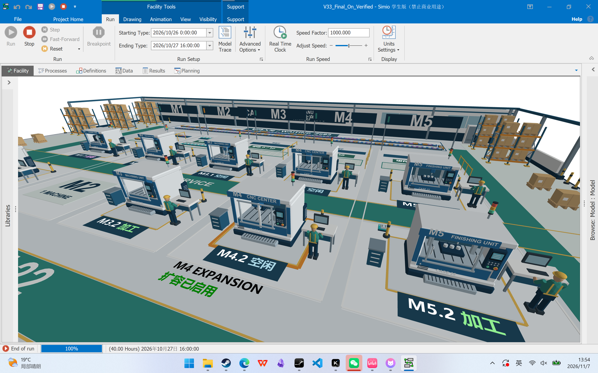
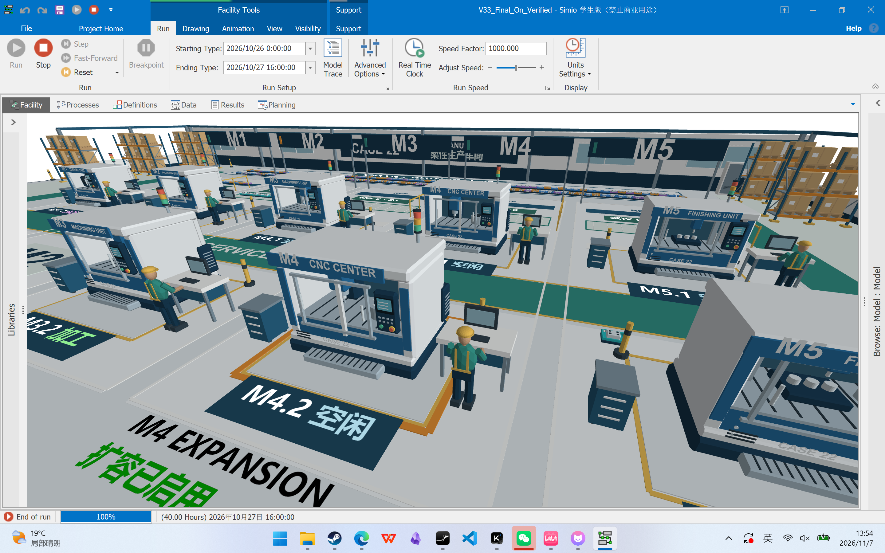

CASE 22 · V3.3 · 小组阶段同步，非最终 Pre 版
M4 扩容时，电脑前同步出现操作工人
AddM4＝1 时，M4.2 显示彩色机器，工人站在旁边的电脑前，双手朝向键盘；AddM4＝0 时，机器恢复灰色，工人隐藏。工人造型沿用其他工位，机器位置和比例保持一致。

两种设置均在 Simio 中运行到 2400 分钟。85 个 Process、32 处文字标签、17,940 条已保存的经济实验响应与 V3.2 一致。
工人姿态近景

交付模型默认 AddM4＝0。在 Model 参数中将 AddM4 设为 1 后运行，即可查看扩容效果。点击 Facility 画面，再按 7 切换到 M4 镜头；4 返回总览。
本页为实际 Simio 窗口截图；启用检查使用同一模型的验证副本。V3.2 的等待区对齐、深蓝状态铭牌与透明扩容说明已保留。原稳定性讨论、经济指标说明和 Process 检查手册位于同步包的 Review_20261106。